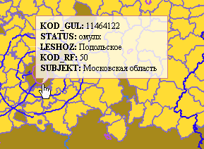

| Общее описание |
MapViewer Template — шаблон веб-страницы с интерактивным окном просмотра карты и информационной панелью, в которой отображается список слоев и дополнительная информация.
NB! Для администрирования содержания карты: подключения слоев на сервере, добавления информации в Базу Данных и т.д. используется приложение GeoMixer Admin
|
| Перечень элементов пользовательского интерфейса |
|
Панель пользовательских инструментов
Пользовательское меню
|
| Загрузить файл |
Загрузка и отображение векторного файла |
| Сохранить состояние карты |
Сохранение текущего состояния карты в виде постоянной ссылки |
| Помощь |
Отображение краткой подсказки и ссылки на документацию |
Структура шаблона страницы просмотра
| 1 |
интерактивное оконо карты |
| 2 |
миникарта |
| 3 |
масштаб и координаты |
| 4 |
информационная панель |
| 5 |
панель инструментов |
| 6 |
переключение базовой подложки «карта-снимки» |
| 7 |
масштабная линейка |
| 8 |
строка поиска |
| 9 |
пользовательское меню |
|
| Поиск по карте |
Чтобы перецентрировать карту в точку с заданными координатами - введите значения координат в поисковой строке и выполните поиск.
Если к проекту подключены адресные базы данных - возможно осуществлять поиск по ним, в левой панели выводятся результаты.
Для отображения результатов адресного поиска в структурированном виде предварительно должна быть построена иерархия адресного поиска (такая иерархия обычно строится в соответствии со структурой аминистративного подчинения).
Подробнее о подключении адресной базы поиска смотрите GeoMixer Admin
|
| Поиск по атрибутивной информации |
В GeoMixer встроена возможность поиска по атрибутивной информации векторных слоев. Для этого задайте значение в строке поиска - поиск будет произведен по всем векторным слоям, составляющим содержание данной карты. Все слои, в одном из полей атрибутивной таблицы которых встречается значение, совпадающее с указаным при поиске, отображаются в левой панели, в результатх поиска.
NB! Данный возможность предусмотрена для векторных слоев, добавленных в Базу Данных с помощью GeoMixer Admin и не применяется к оверлеям - слоям, загружаемым на карту через пользовательский интерфейс.
|
| Координаты и масштаб |
В правом нижнем углу карты отображаются координаты центра окна карты. Можно изменять формат отображения координат на: долготу-широту (в десятичном формате), градусы-минуты-секунды, метры Mercator (см. сведения о пространственных данных).
Масштабные уровни карты дискретны и соответствуют разрешению растровых слоев на заданные уровни детализации карты с учетом выбранной проекции. Иными словами, масштаб карты изменяется приблизительно в два раза с каждым переходом на следующий уровень детализации.
|
| Ссылка на карту |
Пользователь может сохранить ссылку на текущее состояние карты. Это означает, что запоминается положение карты (координаты центра) и масштаб (уровень детализации), сохраняются все нанесенные на карту объекты: маркеры, линии, полигоны и надписи, а также состояние слоев карты (порядок и видимость).
Ссылка записывается в укороченном варианте и хранится в базе, как постоянная ссылка. |
| Список слоев |
|
В панели управления картой отображается список всех растровых и векторных слоев, загружаемых на карту. Для того, чтобы переместить положение центра карты к центру какого-либо слоя - кликните по его названию в списке. Слои отсортированы по группам, согласно структуре карты. Чтобы скрыть слой - уберите галочку в checkbox.
Цветовые индикаторы обозначают цвет раскраски векторных слоев, который задается в стилях создателем или редактором карты.
|
| Навигация по карте, управление картой |
|
Для перемещения перетаскивайте карту курсором при нажатой левой клавише мыши.
Прецентровка карты - одиночный левый клик.
Для приближения и удаления используйте колесико мыши или кнопки «+» и «–» на масштабной линейке.
|
| Добавление маркеров |
|
В режиме маркеров: одиночный клик по карте - добавить маркер.
Клик по маркеру - добавить надпись, следующий клик - скрыть надпись. Двойной клик по маркеру - удалить маркер.
|
| Редактирование содержания маркеров |
|
При клике по маркеру открывается всплывающее текстовое окошко с курсором. Пользователь может добавить простой текст или применить html-разметку - например, поставить ссылку.
Для того, чтобы:
Сохранить надпись и закончить редактирование >>> клик в любое мест на карте.
Cкрыть окошко >>> клик по маркеру.
Редактировать содержание окошка >>> двойной клик внутри окошка.
|
| Измерительные инструменты |
|
Для того, чтобы измерить расстояние - выберите инструмент «линейка».
В режиме «линейка»: одиночный клик - ставит начальную точку и вершины ломаной линии, двойной клик - завершает ломаную линию. Клик на линию - добавляет вершину.
В режиме «полигон»: одиночный клик - ставит вершину многоугольника, двойной клик - замыкает контур многоугольника. Клик на линию - добавляет вершину.
Двойной клик по точке удаляет вершину.
Если необходимо измерить площадь прямоугольной области - проще воспользоваться инструментом вырезания фрагмента, «ножницы».
Нарисованные контуры можно сохранить в гис-формате (tab, shp) - для этого выберите «скачать shp-файл». |
|
| Добавление оверлеев |
|
На карту могут быть добавлены "на лету" векторные слои небольшого объема (формат: SHP, TAB, KML/KMZ). Для этого загрузите файл или архив (если векторный слой состоит из нескольких файлов) через форму загрузки.
Вслед за тем пользователь может редактировать загруженный слой, используя инструменты лииний, полигонов и маркеров (см. «добавление маркеров» и «измерительные инструменты»).
Чтобы сохранить контуры можно либо сохранить ссылку на карту, которая запоминает текущее положение и нанесенные оверлеи, либо скачать векторный файл - для этого выберите «скачать shp-файл».
|
|
|
| Вырезание фрагмента растрового слоя |
|
Если Администратором карты активирована данная опция - с помощью инструмента «ножницы» можно вырезать фрагмент растровой мозаики в виде прямоугольника.
Для этого растяните на карте рамку, охватывающую необходимую область, и нажмите «вырезать фрагмент растра». |
| Работа с векторными слоями |
| 
Векторные слои, отображаемые на карте - активны. При наведении на слой, во всплывающем окне выводится информация из атрибутивной базы. При клике по слою - атрибутивная информация выводится в информационной панели.
Если Администратором карты включена данная опция - пользователь может скачать векторный слой - для этого надо нажать на кнопку рядом с его названием в списке слоев и задать имя слоя для скачивания. |